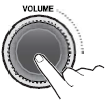
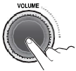

Turn your car's ignition key to ACC or
IGN (ON) position.
Displays the current time.

Press the POWER button to turn the power on.
If the source is ready, playback also starts.
To turn on the power directly
By connecting an USB into the USB port or pressing the AM/FM or
USB button (while the USB device is connected), you can also turn
on the power and the unit then plays.

When power is on, press and hold the POWER
button to turn power off.